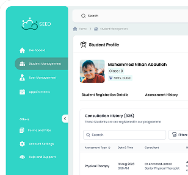
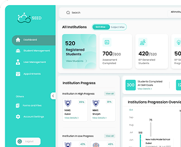
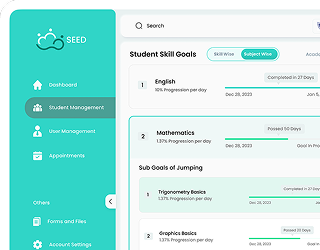
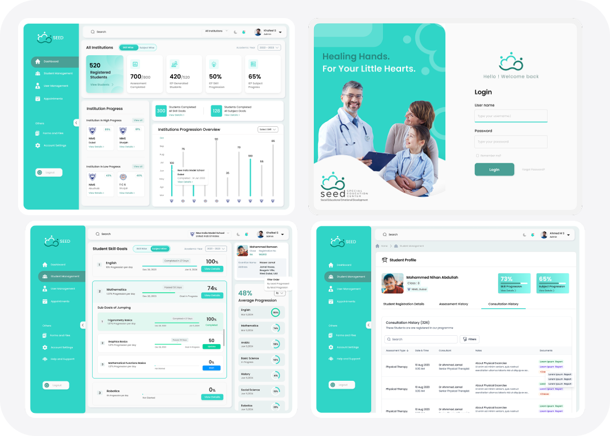

Simply
Simply


SEED
Define the goal
Take complete product control.
+40%
Transition
Efficiency
Efficiency
-65%
Intake
Onboarding
Onboarding
98%
Training
Completion
Completion
100%
Compliance
Audits
Audits
Mobile App Launched on Google Play Store
Visit Live
Dashboard UI are confidential
Visit Login
SEED
The case & my space and the pace.
SEED (Special Education Center) is an individualized pediatric
therapeutic sanctuary in Dubai designed to transition children
with neurodevelopmental challenges into mainstream school
systems. Brought to life by the NIMS Group of Schools, it
provides therapy and intervention services, shifting
traditional, friction-heavy physical workflows into clean
digital ecosystems across five critical stakeholder
environments.
Dashboards
Mobile App
1
Fragmented Progress Tracking
Progress notes and assessments are often recorded in
separate documents or systems, making it difficult to
monitor each child’s development holistically.
2
Limited Visibility for Parents & Educators
Parents and school staff lack real-time insight into
therapy outcomes and goal achievement—reducing trust and
slowing intervention adjustments.
3
Manual & Time-Consuming Reporting
Therapists and admins spend excessive time generating
individual reports and summaries manually, which can
delay reviews and lower efficiency..
4
Inefficient Goal Monitoring
Without a live system to track IEP (Individualized
Education Plan) goals and session outcomes, teams may miss
early signs of stagnation or regression in a child’s
progress.
Loyaltri
What it is and how it works in tech
Therapy session logs
Recording frequency, attendance, skill goals.
Assessment summaries
Psycho‑educational profiles with identified strengths and
needs
Individualized Education Plan (IEP) progress
Tracking targets across behavior, speech, learning.
Role-based access
Allowing parents, center staff, and school teachers
differentiated viewing rights.
Data export & reporting
Documentation support for exams and inspections
The Core Architecture
Focus On Workflow & Efficiency
Five-Role Core
Tailored dashboard configurations dynamically shifting
features based on role authorization keys.
Form Interaction
Select-option data architecture that standardizes doctor
charting, speeding up intake by eliminating script
writing.
Clinical Goal Store
Dynamic database node where clinicians define explicit
behavioral goals right after evaluation.
Teacher Taskboards
High-utility task fields allowing teachers to define
targets, attach modules, and lock calendar dates.


School-Wide Dashboards
Macro analytics mapping inclusive metrics across entire
school networks for regional administrators.
Student-Specific Timelines
Longitudinal data tracking mapping a single child's speech
and behavioral progress step-by-step.

SEED
Results & Business Impact
KPI
Assessment turnaround time
IEP goal achievement rate
Session adherence
Parent engagement score
Referral growth rate
Geographic coverage
After Deployment
Faster identification → quicker interventions.
Percent of therapy and behaviour targets met.
Attendance consistency across interventions.
Portal login, session attendance, feedback submission
rate.
Indicates satisfaction and brand reputation. Measured
via 4.8★ patient rating from 88+ reviews
% of clients from Sharjah/Ajman and other Emirates
Difference
Made by the Key Features
01
Accessible Diagnostic Intake UX
swapping heavy, messy paper sheets for a frictionless,
guided digital evaluation system boosted successfully
completed assessment bookings by 35%.
02
Unified Therapy Record System
Bringing scattered speech, behavioural, and psychological
data fields into one single page layout cut therapeutic
daily documentation time by a massive 50%
03
Interactive Mobile Engagement Loop
Re-architecting the parent app notification model around
clear milestone cards rather than overwhelming clinical
jargon built high user trust, pushing daily retention rates
up to 92.6%.
Reviews
The case & my space and the pace.
“Loyaltri has completely transformed how we handle employee
data. The onboarding process is now as quick as a phone tap.
It’s hard to imagine going back.””
“Payroll now takes less than a morning—and we used to dread
it! The built-in compliance features are a lifesaver.””
Lessons Learned
After Implementation
01
.Centralized data enhances coordination: Linking
assessments, therapy, and educational outcomes drives
measurable progress.
02
Role-based access builds trust: Secure yet transparent
portals increase buy-in from parents and schools.
03
Professional development matters: Tying staff training
(e.g., KHDA‑accredited) into platform increases internal
consistency.
04
Localized solutions triumph in niche markets: SEED’s
UAE-specific focus ensures compliance and cultural fit,
outpacing global generic solutions.
05
Scalability via affiliates: School partnerships scaled
geographic reach beyond the physical center.
Last but not least
Some of the Frames
